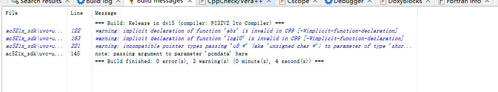

4.1.3. 关于调用了未声明函数的警告
当我们在代码中，调用了未声明的函数的时候，会出现 warning: implicit declaration of function 的警告。这个警告的含义是，你调用了一个函数。但是未提前声明这个函数。

这个在一些情况下，是会影响程序的行为。
按照 C 语言的标准规定，当一个函数未声明的时候，会假定这个函数的原型是下面的样子：
/* 当 foo 未被声明的时候，会假定 foo 的原型如下 */
extern int foo(...);
4.1.3.1. 如何转换为报错
一般来说，我们都是需要先声明函数原型之后，再去调用。以避免一些未预料的错误。
为了让编译器将这个警告转换为错误，可以在编译参数中添加：-Werror=implicit-function-declaration。